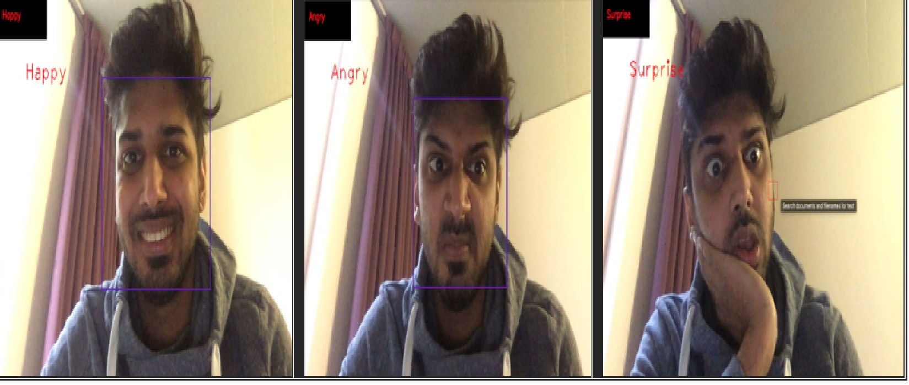
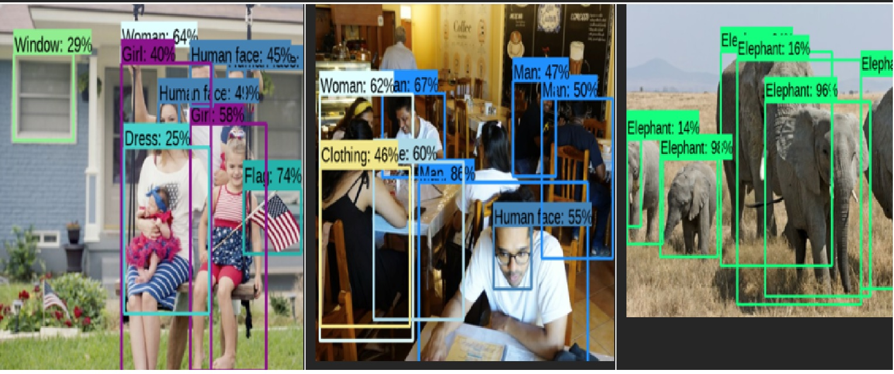
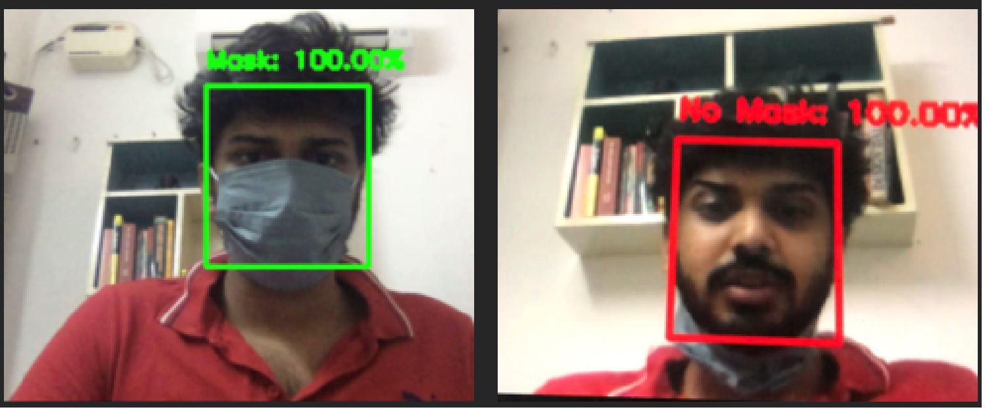
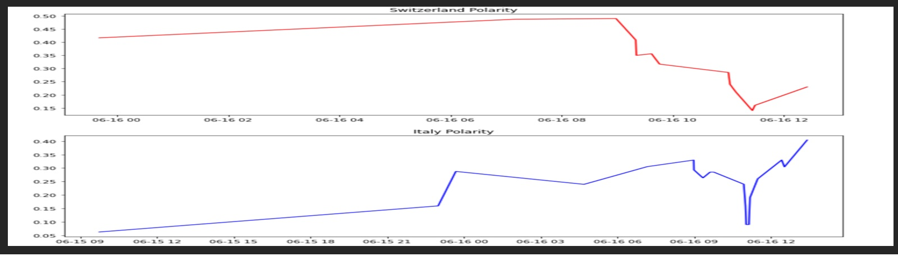

Personal Projects

Personal projects - Implemented data analytics , Deep learning and AI stimulation.
1.Facial Emotion recognition
This Highly extensive projects classifies the emotion on a person face into one of seven categories – happy, disgusted, fear, angry, sad, surprised, neutral based on deep convolutional neural networks. This is trained in the FER-2013 dataset published on ICML. This is done using the Python programming language and OpenCV and Tensorflow libraries. It uses other sets of image to test and is displayed in a website using the Flask programming language in a local host atmosphere. The same was prototyped in a video and used to detect the objects in a video.

2.Object detection:
A image detection engine was developed based on generic techniques using the TF object detection API and TensorFlow, Keras libraries and series of images was used to train the model using data from various sources and it can differentiate up to 1000 different objects in the image. It uses other sets of image to test and is displayed in a website using the Flask programming language in a local host atmosphere. The same was prototyped in a video and used to detect the objects in a video.

3.Face Mask detection:
With regards to the scenario in 2020 due to Covid-19, a much in demand face mask detection model was developed. Using Deep Neural network and CNN. Model accuracy is very high on the test set. The Open CV was used to detected the face using the webcam video and the preprocessed frames were sent into the model to establish if the person is wearing a face mask or not. The model is capable of predicting multiple faces at the same time.

4.Experimental drug side effects tracker:
Based on a new experimental drug test on 2100 participants both young and old side effects on them was tracked for mass side effects predicted when given out to the world requirement. Computation method of Modelling using TensorFlow and Keras was used to train and test using the Sequential model to arrive at the result. A confusion matrix was built to explain the prediction on the said basis and found the drug is highly safe to use considering the less percentage of side effects tracked.
5.Local Supermarket data collection, engineering and Visualization.
As an experiment a local super market data including the list of stocks, inventory, sales, profit, employees and all available data was collected upon requested and the entire data was cleaned, preprocessed and engineered using the MySQL Database workbench using various commands likes unions, joins, cascades etc. and send into modelling for improving the sales and the result was visualized in a complete enjoyable manner using tableau and Power BI for the complete satisfaction of the supermarket personal and its owner.
6. Chatter – Box:
Chatter box is the new age customer service providers because of their ability to serve various queries of various users, they are used in smart electronic devices, websites and software applications.
This model was developed in more efficiency by the implementation of NLTK library in python, to perform tasks such as automatic summarization, translation, named entity recognition, relationship extraction, sentiment analysis, speech recognition, and topic segmentation.
7. Customer Segmentation in Automobile industry:
Built a machine learning model to easily classify the customer based on the salary, profession, spending score, Age, Gender into the various segmentation of the Automobile company using the SVM and Random Forest Classifier.
8.Bank credit default preventer:
Machine learning based data cleaning, processing, visualization insights, model generation and entire engineering techniques were extensively used to prevent bad loans and NPA’s by managing the credit risk.
ML based model was developed to identify capable and reliable clients on basis of their yearly bank transactions, payment sincerity, no Cheque bounce etc.
9.Twitter Sentimental analysis:
A complete sentimental analysis of the Natural language processing problem in twitter is done by classifying positive tweets Vs negative tweets by ML classification, text mining, text analysis , data analysis and visualization using various packages like NLTK, tweepy etc. An example of sentimental differences between the tweets of Italy vs Switzerland game at euro 2020 is provided below
